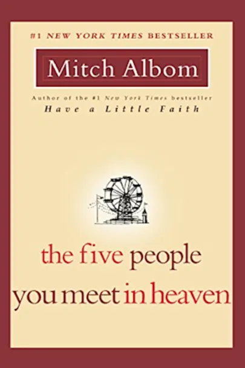

|

|
Eddie is a grizzled war veteran who feels trapped in a
meaningless life of fixing rides at a seaside amusement park.
His days are a dull routine of work, loneliness, and regret.
Then, on his 83rd birthday, Eddie dies in a tragic accident, trying to save a little girl from a falling cart. He awakens in the afterlife, where he learns that heaven is not a lush Garden of Eden, but a place where your earthly life is explained to you by five people. These people may have been loved ones or distant strangers. Yet each of them changed your path forever.
One by one, Eddie's five people illuminate the unseen connections of his earthly life. As the story builds to its stunning conclusion, Eddie desperately seeks redemption in the still-unknown last act of his life: Was it a heroic success or a devastating failure The answer, which comes from the most unlikely of sources, is as inspirational as a glimpse of heaven itself.
|